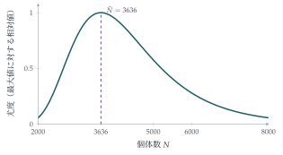

STEP II 2000、第13問
先に進む前に問題を読んでおこう。問題は STEP Support Programme の問題データベースにある： step.maths.org/questions/00-s2-q13
導入
ある島にハタネズミは何匹すんでいるだろうか。すべてを数えることはできない。隠れるし、動き回るし、見た目もよく似ているからである。しかし、何匹かを捕まえて印をつけ、放してから、もう一度何匹かを捕まえることはできる。\(200\) 匹に印をつけ、2回目に捕まえた \(200\) 匹のうち \(11\) 匹に印があったとすれば、個体群のおよそ \(\frac{11}{200}\) に印がついていることになるので、個体数は約 \(200 \times \frac{200}{11} \approx 3636\) である。
この標識再捕獲法（capture–recapture）は、魚、鳥、クジラの個体数の推定に用いられるほか、薬物使用者、ホームレスの人々、戦争の犠牲者の数など、完全には数えきれないあらゆる集団の規模の推定にも使われている。この問題は、直観的な推定値を最尤法（maximum likelihood）の原理によって確かな根拠の上に置くものである。最尤法は統計的推定において最も重要な考え方であり、「観測されたデータが最も起こりやすくなるように未知の値を選ぶ」というものである。
取りかかる前に
個体群には \(N\) 匹のハタネズミがいて、そのうち \(200\) 匹に印がついている。無作為に \(200\) 匹の標本を取り出す。ちょうど \(11\) 匹に印がついている確率はいくらか。
印のついた \(200\) 匹から \(11\) 匹を、印のない \(N - 200\) 匹から \(189\) 匹を選ぶ。標本は全部で \(\binom{N}{200}\) 通りあり、どれも同様に確からしいので、 \[p_N = \frac{\binom{200}{11}\binom{N - 200}{189}}{\binom{N}{200}}.\] これが超幾何分布（hypergeometric distribution）である。
順を追って解く
段階 1 尤度
\(N\) を含む二項係数（binomial coefficients）を書き下すと \[\binom{N - 200}{189} = \frac{(N - 200)!}{189!\,(N - 389)!}, \qquad \binom{N}{200} = \frac{N!}{200!\,(N - 200)!},\] であるから \[p_N = \binom{200}{11}\frac{200!}{189!}\cdot\frac{\bigl((N - 200)!\bigr)^2}{N!\,(N - 389)!} = k\frac{\bigl((N - 200)!\bigr)^2}{N!\,(N - 389)!}. \qed\] データを固定し、未知数 \(N\) の関数とみなしたとき、\(p_N\) を尤度（likelihood）という。
段階 2 整数についての最大化
\(N\) は整数なので、微分を使うのは扱いにくい。代わりに \(p_{N+1}\) と \(p_N\) を比べよう。その比が \(1\) より大きくなるのはどのようなときか。
階乗のほとんどは約分されて \[\frac{p_{N+1}}{p_N} = \frac{(N - 199)^2}{(N + 1)(N - 388)}.\] これが \(1\) を超えるのは \((N - 199)^2 > (N + 1)(N - 388)\)、すなわち \(N^2 - 398N + 39601 > N^2 - 387N - 388\)、つまり \(11N < 39989\)、\(N < 3635.4\) のときである。したがって \(p_N\) は \(N = 3636\) まで増加し、その後は減少する。よって最尤推定値（maximum likelihood estimate）は \[\hat N = 3636. \qed\] これは \(\frac{200 \times 200}{11} = 3636.4\) の整数部分であり、直観的な推定値と一致する。
段階 3 3回目の標本
2回目の標本を取ったあと、その中の印のない \(189\) 匹にも印をつけるので、印のついたハタネズミは \(389\) 匹になる。\(N = 3636\) とすると、印のないものは \(3636 - 389 = 3247\) 匹である。3回目に取り出す \(200\) 匹の標本に印のついたものがちょうど \(j\) 匹含まれる確率は \[\frac{\binom{389}{j}\binom{3247}{200 - j}}{\binom{3636}{200}}.\] \(j = 0, 1, \ldots, 200\) についてのこれらの確率の和は \(1\) でなければならず、これにより求める恒等式が得られる。■

振り返り
未知数の関数としてのデータの確率。尤度は通常の見方を逆転させる。データを固定し、パラメータを動かすのである。
離散的な最大化には比を使う。隣り合う項を比較することで、整数を変数とする関数の最大値の位置を突き止めた。
確率の和は \(1\) になる。すべての結果について分布の和をとることで、組合せの恒等式（ヴァンデルモンド（Vandermonde）の恒等式（Vandermonde’s identity））を証明した。
背後にある数学
最尤法
最尤法の原理は、1910年代から1920年代にかけてフィッシャー（Ronald Fisher）が発展させたもので、「未知のパラメータを、観測されたデータが最も起こりやすくなる値によって推定せよ」というものである。これは群を抜いて広く使われている推定法であり、データへの曲線のあてはめから、機械学習（machine learning）におけるニューラルネットワーク（neural networks）の訓練にまで及ぶ。後者の「損失関数」（loss functions）は、たいてい対数尤度にマイナスをつけたものである。フィッシャーは、モデルが性質のよいもの（日常的なモデルの大半で成り立つ条件を満たすもの）であれば、標本が大きいとき最尤推定値は近似的に正規分布（normal distribution）に従い、およそ妥当な推定量（estimator）の中で最も精度が高いことを示した。ただし重要な例外もある。次節（第 13.3 節）では、未知数がとりうる最大の値、すなわち分布の端点であり、そこでは最尤推定値の振る舞いはまったく異なる。その誤差は近似的に正規分布に従わず、\(\frac{1}{\sqrt n}\) ではなく \(\frac1n\) のように小さくなっていくのである。
推定はどれほど精確か
図 13.2.1 は尤度の山が幅広いことを示している。\(11\) 匹の再捕獲はそれほど多くの情報ではないのである。大まかに計算してみよう。2回目の標本に含まれる印のついたハタネズミの数は、近似的に平均 \(\frac{200 \times 200}{N}\) のポアソン分布（Poisson distribution）に従うので、その標準偏差（standard deviation）はおよそ \(\sqrt{11} \approx 3.3\) であり、相対誤差は約 \(30\%\) となる。これはそのまま \(N\) の推定値にも引き継がれる。\(N\) を \(10\%\) 以内の精度で推定するには、生物学者はおよそ \(100\) 匹の再捕獲を必要とするだろう。統計学者はまた、単純な推定値のわずかな偏り（bias）を補正するため、チャップマン推定量（Chapman estimator）\(\frac{(M + 1)(C + 1)}{R + 1} - 1\) を用いる。ここで \(M\) と \(C\) は2回の捕獲の大きさ、\(R\) は再捕獲された数である。
ラプラス（Laplace）は1802年、同じ考え方を用いて、国勢調査を行わずにフランスの人口を推定した。彼は1年間に国全体で登録された出生数を知っており、さらにいくつかのコミューンを標本として、その人口と出生数の両方を把握していた。人口と出生数の比がどこでも同じであると仮定して、彼はフランスの人口をおよそ \(28\) 百万人と推定し、さらに不確かさの尺度まで与えた。この方法は、動物の個体数について改めて発見された。1890年代にデンマークのフィヨルドでツノガレイに標識をつけた C. G. J. Petersen と、1930年代に鳥の足環を用いた Frederick Lincoln によってである。そのため、今でもしばしばリンカーン–ピーターセン推定量（Lincoln–Petersen estimator）と呼ばれている。
思考のスキル
未知数を推定するには、観測されたことの確率を未知数の関数として書き、それを最大化せよ。
大学では、最尤法は統計的推論の根幹をなしており、推定値がどれほど精確かを扱う理論（フィッシャー情報量（Fisher information））や、競合するモデルをどう比較するかを扱う理論（尤度比検定（likelihood ratio tests））を伴っている。
次の一歩
一般の公式。\(M\) 匹の動物に印をつけ、2回目の大きさ \(C\) の標本に印のついたものが \(R\) 匹含まれていたとする。\(N\) の最尤推定値は \(\frac{MC}{R}\) の整数部分であることを示せ。
ヴァンデルモンド。\(a\) 人の女性と \(b\) 人の男性から \(c\) 人の委員会を選ぶ方法を数えることにより、\(\sum_j\binom{a}{j}\binom{b}{c - j} = \binom{a + b}{c}\) を証明せよ。
硬貨投げ。表の出る確率 \(p\) が未知の硬貨を \(n\) 回投げたところ、表が \(h\) 回出た。\(p\) の最尤推定値は \(\frac hn\) であることを示せ。
再捕獲ゼロ。2回目の標本に印のついたハタネズミが1匹も含まれていなかった場合、最尤推定値はどうなるか。そのことはこの方法について何を教えてくれるか。
さらに学ぶために
David Spiegelhalter, The Art of Statistics（Pelican）。推定と不確かさについて。
George Seber, The Estimation of Animal Abundance（Blackburn）。標識再捕獲法についての標準的な参考書。
John Rice, Mathematical Statistics and Data Analysis（Duxbury）。最尤法を含む、数理統計学の入門書。